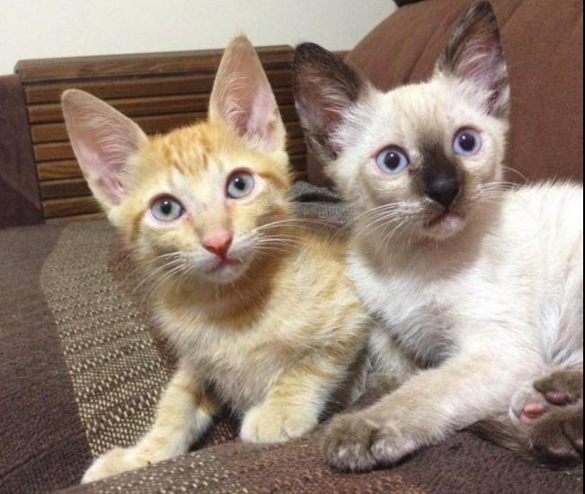
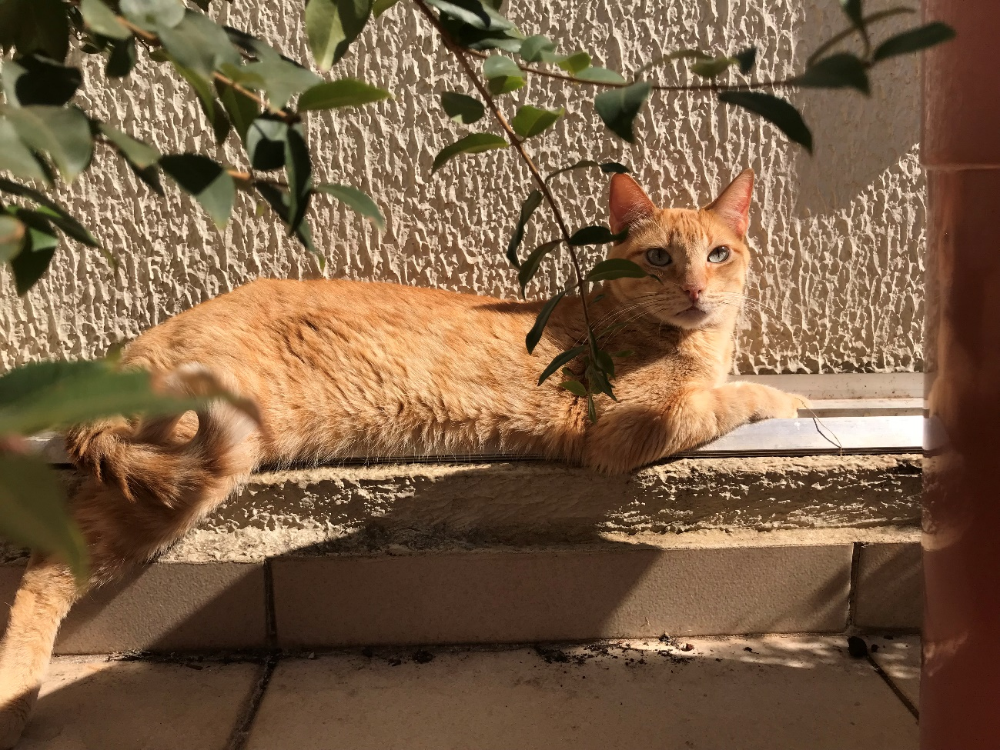
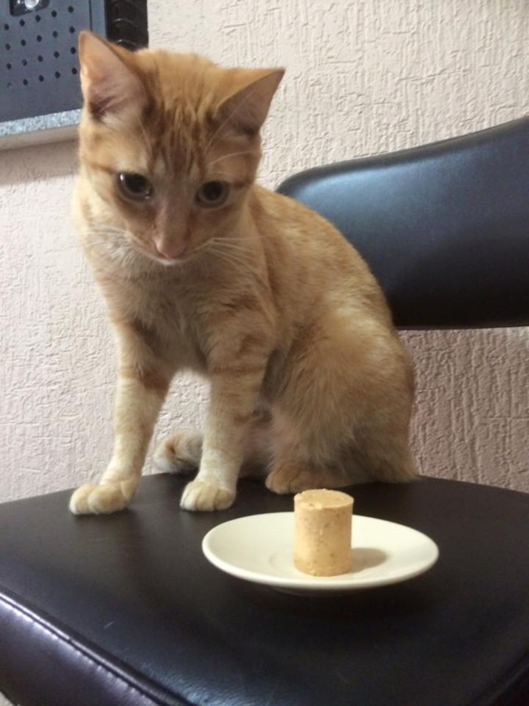

Paçoca, meu gatinho laranja.
Paçoca chegou em 21 de abril de 2014, junto com sua irmã, Lola Valéria.
Eles foram adotados. São gatos cuja gata mãe apareceu na casa de uma
amiga e deu à luz cinco gatinhos. Ela não tinha como ficar com eles.
Então foram adotados juntos, mas nesta página falaremos apenas a respeito
do Paçoca.
Tinha cerca de 35 dias de vida e como sua data de nascimento era incerta,
ficou decidido que seria 17 de Março.
Por que esta data ? Pois é dia de São Patrício, padroeiro dos
Irlandeses, que muitas vezes são ruivos.

Todos os gatos laranja são uma raça específica?
Não, o padrão de cor é causado pela complicada combinação genética dos
felinos e em na maioria das vezes há 4 vezes mais machos que fêmeas dessa
cor.
Outro fato curioso é que muitas vezes os laranjinhas tem manchas
pretas no focinho, gengiva e lábio e elas são similares as sardas humanas.
Mas e o Paçoca Edgar? Eis o moleque crescido:

Gatos laranja muitas vezes têm nome de comida, principalmente em inglês:
Marmalade, Ginger, Tangerine, Apricot, Carmello, Cheddar, Honey ...
Com o Paçoca não poderia ser diferente.
E já que estamos no tópico comida, eis suas preferências alimentares:
comida, comida, comida.

As informações citadas a respeito dos gatos laranja em geral,
assim como mais informações podem ser obtidas acessando os
seguintes sites:
Orange Tabby Cats Fun Facts
why Ginger Cats Are So Special
Todas as fotos desta página são dos meus gatos e foram tiradas por
mim entre 2014 e 2018.
As informações a respeito dos gatos laranja foram obtidas nos
links fornecidos.